我们当前采用前后端分离架构，后端基于 Spring Boot 3，前端基于 React + Vite，数据库使用 H2。我们在实现核心功能的同时，也对异常处理、登录态维护、用户数据隔离、列表分页与筛选等细节做了工程化处理。同时我们高度重视系统的可扩展，以便在后续的实验中方便地加入新的功能。
本项目采用按模块拆分的协作方式，尽量保证每个功能点有清晰负责人，同时通过
feature/* -> develop -> main 的流程进行协作。
我们最终分工如下：
| 成员 | 学号 | 主要负责内容 | 对应代码或文档 |
|---|---|---|---|
| 汤雨凡 | 23307130372 | 后端认证、数据库设计、产品测试、报告制作和提交 | backend/auth、backend/user、docs/ |
| 李泽栋 | 23307130271 | JWT 认证功能、任务模块、分页/筛选/排序代码优化 | backend/auth、backend/task |
| 李宇轩 | 23307130248 | 前端页面与交互 | frontend/src |
| 彭国渠 | 23300246001 | 测试、README、实验报告整理 | backend/src/test、docs/、README.md |
| 沈乐 | 23307130278 | 分页/筛选功能实现、Knife4j 接口文档集成 | backend/task、application.yaml |
现有用户注册功能满足：
后端注册接口由 AuthController.java 和 AuthService.java 实现。前端注册页面位于 RegisterPage.tsx，页面在用户输入阶段就会给出实时提示，从而减少无效请求。
下面两张图展示注册功能的页面表现：
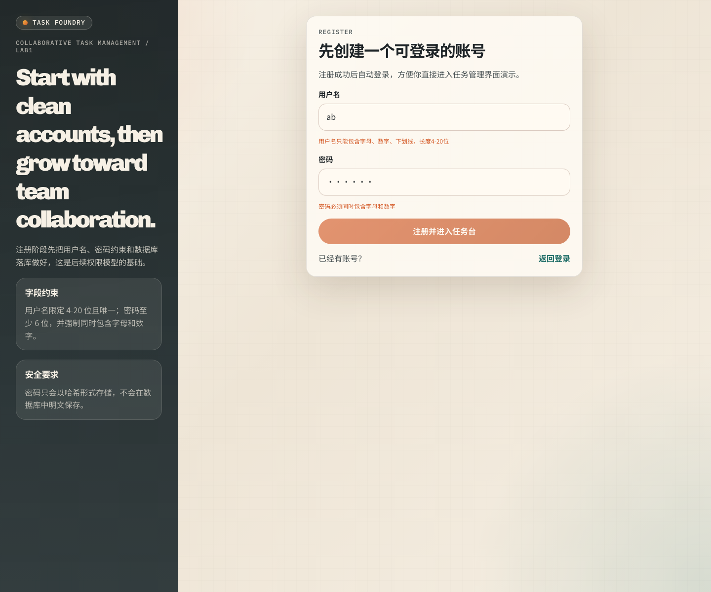
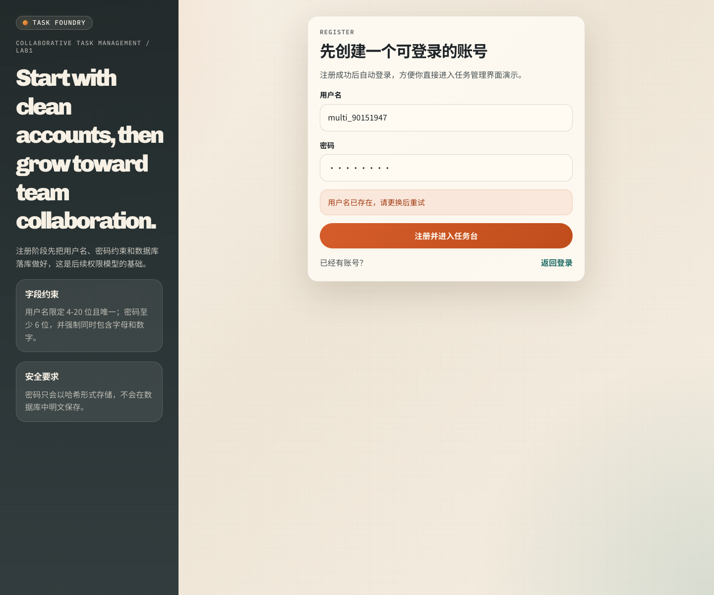
注册功能不仅实现了“能写入数据库”，还实现了字段约束、唯一性校验和错误提示闭环。
3.2 用户登录功能
本项目的处理方式如下：
401；登录页位于 LoginPage.tsx，登录态维护逻辑位于 AuthContext.tsx、storage.ts 和 http.ts。后端鉴权链路则由 SecurityConfig.java、JwtAuthenticationFilter.java 和 JwtService.java 实现。
相关页面截图如下：
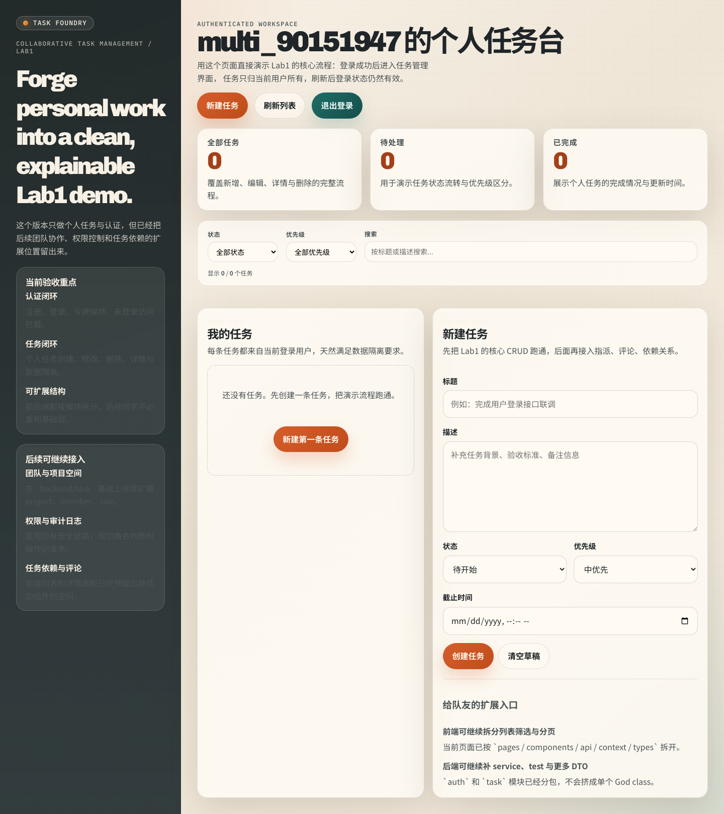
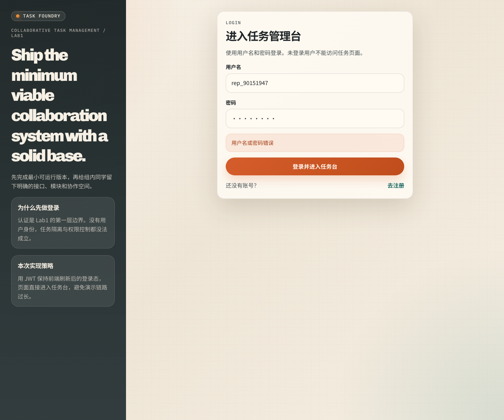
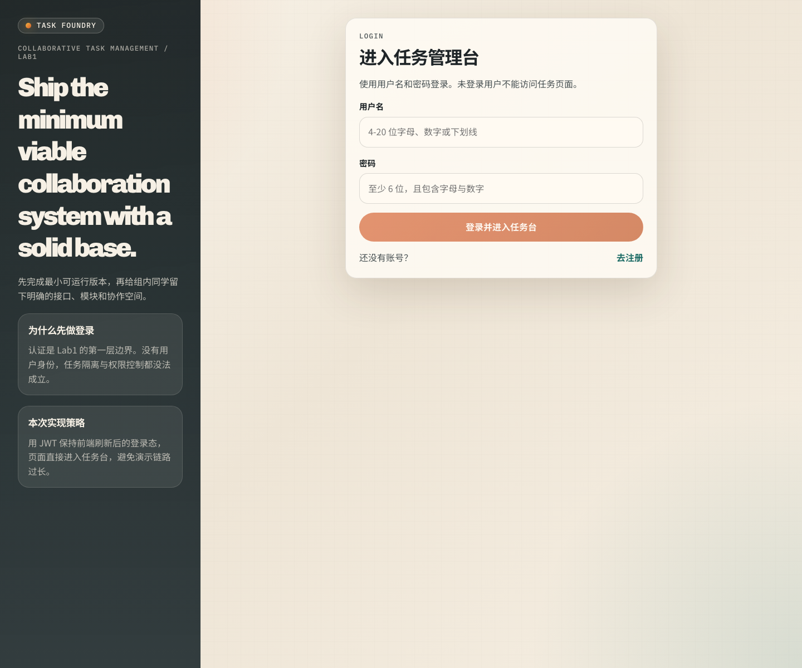
评“用户登录功能正确实现”“未登录用户不能访问需要身份认证的任务功能”“密码错误等异常情况能正确处理并提示”“登录状态应能被正确维护”这几项，在当前版本中均已形成完整闭环。
登录后的用户可以在任务页中管理自己的个人任务。系统目前支持：
每个任务包含以下字段：
titledescriptionstatusprioritydueAtcreatedAtupdatedAt这些字段在实体类 Task.java 中定义，并通过 AuditableEntity.java 统一补充创建时间与更新时间。
任务页面位于 DashboardPage.tsx，后端任务接口位于 TaskController.java 和 TaskService.java。
运行截图如下：
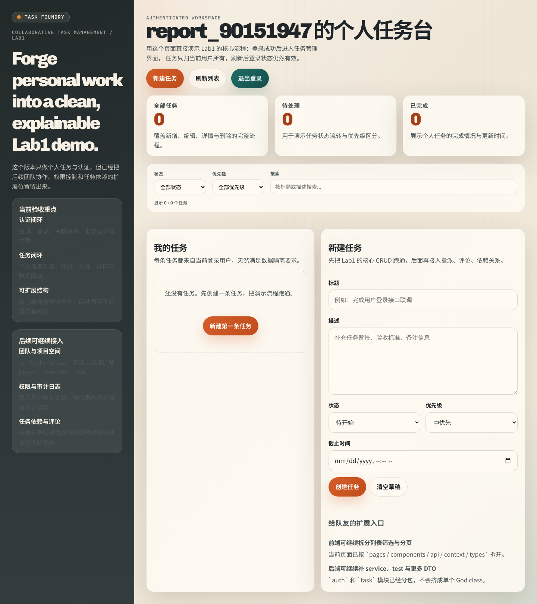
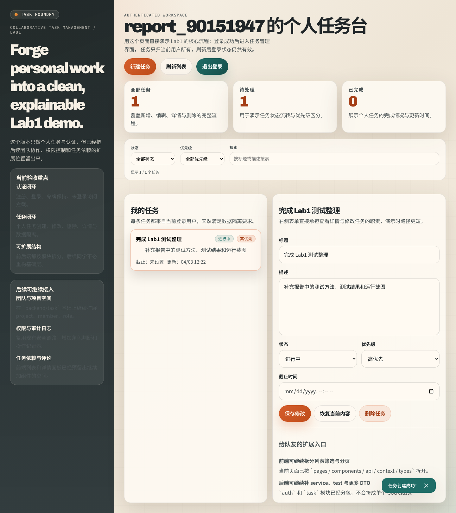
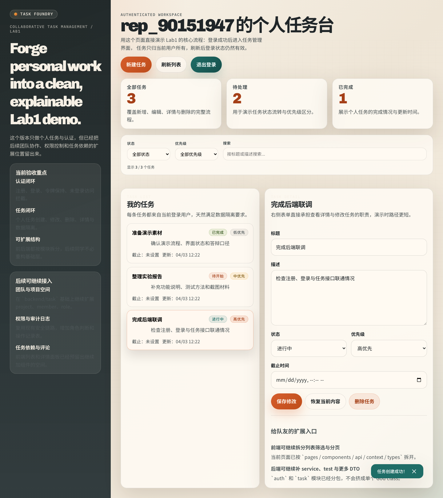
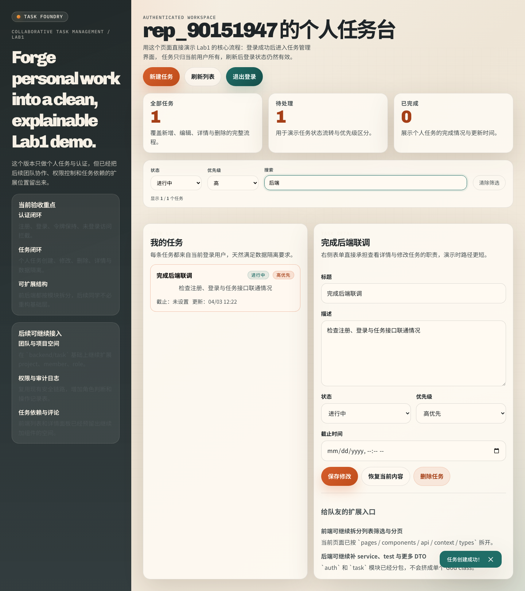
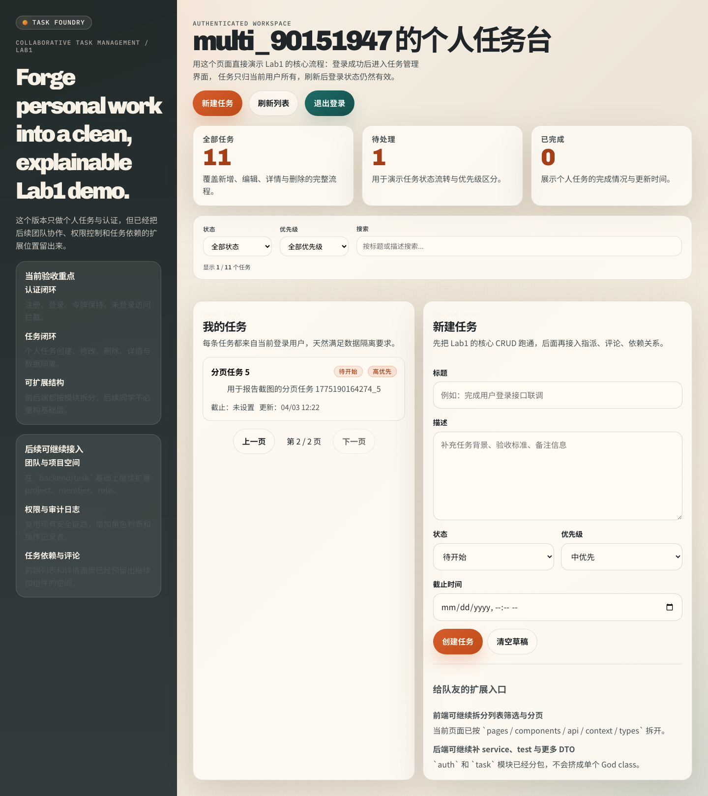
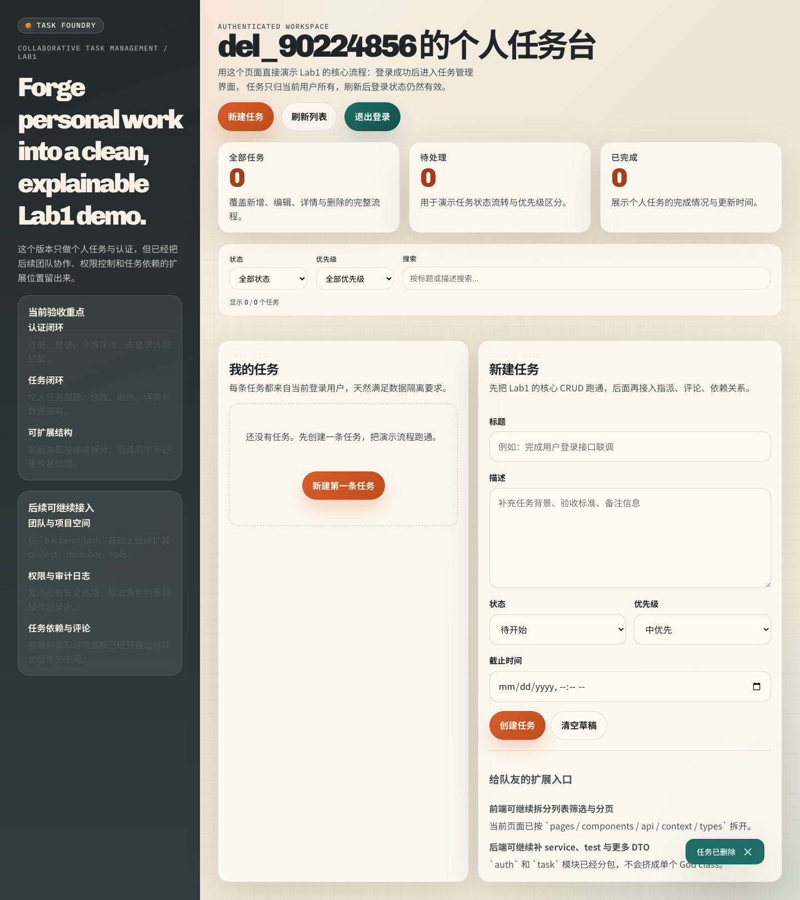
当前任务功能已满足“个人任务的创建、查看、修改、删除正确实现”“前端页面逻辑清晰，基本交互顺畅”“错误提示合理”。
Lab1 明确要求“用户只能查看和操作自己的任务”。本项目通过以下方式实现：
owner_id 与用户表关联；User；taskId 和
ownerId；也就是说，用户 A 无法通过构造请求直接读取或删除用户 B 的任务。这一点既在服务层逻辑中实现，也在集成测试中验证通过。
本项目采用前后端分离架构：
目录结构上，后端位于 backend/，前端位于
frontend/，两者可独立启动、独立构建、独立测试。
本项目目前主要包含两张核心表：
userstasks其中：
users 表保存用户 ID、用户名、密码哈希和审计字段；tasks 表保存任务基础信息，并通过 owner_id
关联所属用户；title、description、username、password_hash
等字段都设置了长度与非空约束。以实体设计为例：
这种设计既满足 Lab1 的字段需求，也为后续增加团队、成员、评论、依赖关系等扩展留下了空间。
为了避免接口返回风格混乱，本项目实现了统一异常处理机制：
BusinessExceptionResourceNotFoundExceptionMethodArgumentNotValidException
统一转换统一处理逻辑位于 GlobalExceptionHandler.java。所有接口统一返回
ApiResponse
结构，这样前后端在处理正常响应和错误响应时都更稳定，避免“同一种错误在不同接口里格式不一致”的情况。
为了方便后续 Lab 继续扩展，本项目在结构上尽量避免把逻辑堆进一个控制器或一个服务类中，而是采用模块化拆分：
auth 模块：注册、登录、JWT、用户认证task 模块：任务实体、DTO、服务、控制器、算法user 模块：用户实体、仓库、查询服务common 模块：统一返回结构、异常、审计基类config 模块：安全配置、JWT 配置前端同样进行了拆分：
pages 放页面级组件components 放可复用组件api 放请求封装context 放全局登录态types 放类型定义utils 放工具函数这种结构使当前 Lab1 的代码已经具备“继续迭代”的条件。
我们最终选择 JWT的主要原因：
我们使用：
TaskStatusTaskPrioritySortByTaskUrgencyLevel这些枚举统一表达业务语义。
我们做了两层考虑：
这样既能满足当前 Lab1 的最小版本需求，也能体现我们对后续扩展的预判。
我们额外保留了后端自动化测试代码，用来验证：
等功能的有效性。
我们编写并执行了完整的测试，测试覆盖：
lint 和 build本次测试对应的主要测试文件包括：
backend/src/test/java/com/lab/taskmanager/BackendApplicationTests.java：用于验证后端应用上下文能够正常启动；backend/src/test/java/com/lab/taskmanager/auth/controller/AuthControllerTest.java：用于验证注册、登录接口的参数校验与返回结果；backend/src/test/java/com/lab/taskmanager/task/controller/TaskControllerTest.java：用于验证任务控制器的创建、列表、删除和参数校验行为；backend/src/test/java/com/lab/taskmanager/task/algorithm/TaskRankingServiceTest.java：用于验证任务排序算法在不同优先级、状态和截止时间下的排序结果；backend/src/test/java/com/lab/taskmanager/acceptance/Lab1RequirementIntegrationTest.java：用于按
Lab1 验收要求验证注册、登录、鉴权、任务 CRUD、数据隔离和分页边界；backend/src/test/resources/application-test.yaml：用于提供测试环境下的数据库与应用配置。当前实际结果：
backend ./mvnw test：15 项测试全部通过frontend npm run lint：通过frontend npm run build：通过我们在开发过程中采用了 main / develop / feature / hotfix
的分支结构，并尽量按照 GitFlow 的要求开展开发。整体流程如下：
main 作为主分支；main 拉出 develop
作为日常集成分支；develop 创建 feature/*
分支；develop；develop 合并到
main；hotfix/* 分支修复。从仓库历史看，我们并不是只建立了一个或两个临时分支，而是确实围绕不同模块使用了较完整的
feature/* 与 hotfix/*
流程。为了更贴近评分点，这里将分支使用情况进一步拆开说明。
与当前最终交付版本直接相关的主要 feature /
feat 分支包括：
| 分支名 | 主要内容 | 合入目标 |
|---|---|---|
feature/backend-scaffold |
后端工程骨架初始化、Maven Wrapper、H2、本地启动测试 | develop |
feature/user-domain |
用户实体、用户仓库、审计基类 | develop |
feature/auth-request-dto |
注册/登录请求 DTO 与基础参数校验 | develop |
feature/auth-api |
注册登录接口、认证服务、统一返回结构、认证控制器测试 | develop |
feature/task-domain |
任务实体、DTO、仓库、服务、资源不存在异常 | develop |
feature/task-controller |
任务 CRUD 控制器与控制器测试 | develop |
feature/task-ranking |
任务优先级排序算法与相关模型 | develop |
feature/frontend |
React 前端工程初始化与页面基础结构 | develop |
feature/page |
后端分页支持 | develop |
feature/filter |
状态/优先级筛选能力 | develop |
feature/jwt-auth |
JWT 鉴权、安全配置、认证链路打通 | develop |
feature/Swagger |
Swagger / Knife4j 文档能力 | develop |
feature/apply-rank-sorting |
统一排序能力、sortBy 参数、数据库分页优化 |
develop |
feature/frontend-optimization |
前端分页接入、筛选联调、交互优化 | develop |
feat/add-test-suite-readme |
测试代码整理、README 测试说明补充 | develop |
feat/lab1-test-hardening |
测试加固、边界修复、报告相关测试支撑 | develop |
也就是说，我们并不是在 develop
上直接堆所有代码，而是按后端基础、认证、任务模块、前端页面、分页/筛选、测试与文档等方向拆分了多条功能分支，这一点与实验文档要求的“小步提交、分支开发”是一致的。
除了功能分支之外，我们在开发过程中还真实使用过两次
hotfix 语义的修复流程。
| Hotfix 分支 | 修复内容 | 合入路径 | 说明 |
|---|---|---|---|
hotfix |
修复 Swagger 文档访问权限问题；调整 application.yaml 中
JWT 配置结构 |
先合入 develop，再随 develop -> main
进入主干 |
对应提交
d9515c0、1dfcd26，用于修复联调和文档访问问题 |
hotfix/revert-main-direct-merges |
清理错误直接进入 main 的旧路线分支，并将
main 与当前 develop 主线重新对齐 |
hotfix/revert-main-direct-merges -> main |
对应提交 e459bbf 和合并提交
3e58df4，用于修复主干分叉问题 |
第一条 hotfix
分支主要解决的是运行与接口文档访问问题，属于典型的“功能基本具备，但存在关键配置错误”的修复；第二条
hotfix/revert-main-direct-merges
则是一次更典型的主干修复，处理的是错误分支进入 main
后导致的主干偏移问题。
下图为两次 hotfix 合并请求的实际截图：
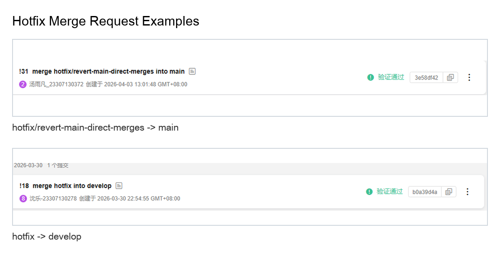
“开发者与合入者不是同一人”的几条merge：
| 源分支 | 主要开发者 | 合入目标 | 实际合入者 | 说明 |
|---|---|---|---|---|
feature/page |
沈乐（CodeArts 作者名 Kraft42） |
develop |
李宇轩（CodeArts 作者名 hid_mjqi-o7two7va5_） |
分页功能由沈乐完成开发，后由李宇轩合入 develop |
feature/apply-rank-sorting |
李泽栋（CodeArts 作者名 hw026251075/hw026251075） |
develop |
李宇轩（CodeArts 作者名 hid_mjqi-o7two7va5_） |
排序与分页优化分支由李泽栋完成主要开发，后由李宇轩合入 |
feature/jwt-auth |
李泽栋（CodeArts 作者名 hw026251075/hw026251075） |
develop |
李宇轩（CodeArts 作者名 hid_mjqi-o7two7va5_） |
JWT 鉴权分支由李泽栋开发，最终由李宇轩合入 |
feature/filter |
沈乐（CodeArts 作者名 Kraft42） |
develop |
汤雨凡（CodeArts 作者名 hid_7sgnpgesx9wp06h） |
筛选分支由沈乐开发，后由汤雨凡合入 develop |
feature/frontend-optimization |
李宇轩 | develop |
彭国渠（CodeArts 作者名 hid_1s77tf1d_ouaimx） |
前端分页与联调优化由李宇轩开发，后由彭国渠合入 |
我们在开发过程中实践一个同学发起 Merge Request，另一个同学完成审核与合入的协作实例。这一点对我们学习 Git 的协作是有帮助的。
下图展示了若干条 feature/* -> develop
的实际合并请求截图，其中包括分页、排序、JWT
鉴权、筛选和前端优化等分支：
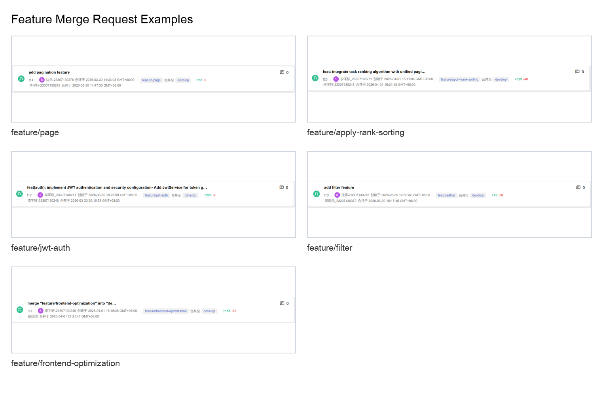
也有部分分支是由负责人本人在完成开发和自查后合入
develop，例如早期后端小步拆分的：
feature/backend-scaffoldfeature/user-domainfeature/auth-request-dtofeature/auth-apifeature/task-domainfeature/task-controllerfeat/add-test-suite-readmefeat/lab1-test-hardening此外，也确实发生过一次主干修复流程：
hotfix/revert-main-direct-merges这条 hotfix 分支用于清理错误进入主干的旧路线代码，并重新与当前
develop 主线对齐，恰好也体现了 GitFlow 中“hotfix
分支修复主分支问题”的实际使用过程。
在提交信息规范方面，我们尽量采用了清晰的前缀式 Commit Message，例如：
feat: initialize spring boot backend scaffoldfeat: add basic auth apifeat: add task controllerfeat: add lab1 test suite and update readmefix: allow public access to Swagger UI and API documentation endpoints我们在开发过程中使用了 AI 工具辅助完成部分工作，但并未直接把需求全文交给 AI 后原样提交，而是把 AI 作为“辅助分析、辅助编码、辅助测试与辅助文档整理”的工具使用。
我们按成员对主要提交进行了整理(Commit SHA 保留前 12
位)。另需说明的是，部分提交在 CodeArts
中显示的是平台账号名，和组内实名并不完全一致，本文档按组内实际分工进行归类。
| 提交编号 | Commit SHA | Commit message | 提交内容 | AI 使用 |
|---|---|---|---|---|
| 提交0 | b57a2e224e17 |
Initial commit |
完成仓库初始创建，建立最早的 README、LICENSE 和基础仓库结构。 | 无 |
| 提交1 | 9b41a0cefe71 |
feat: initialize spring boot backend scaffold |
初始化 Spring Boot 后端工程骨架，加入 Maven Wrapper、基础依赖、H2 本地开发配置和启动测试。 | 用于辅助生成工程骨架，并整理 commit 与改动说明。 |
| 提交2 | 35c1d4a0d398 |
merge feature/backend-scaffold into develop |
将后端基础骨架分支合入
develop，完成后端最小可运行框架接入。 |
用于整理合并说明和提交信息。 |
| 提交3 | ece54755324d |
feat: add user entity and repository |
新增用户实体、审计基类和用户仓库，为认证模块提供数据库基础。 | 用于构建部分代码，并辅助书写 commit 信息。 |
| 提交4 | 5d1397527ffb |
feat: add auth request dto |
新增注册与登录请求 DTO，并加入用户名、密码格式校验。 | 用于构建部分代码，并辅助书写 commit 信息。 |
| 提交5 | 8d5dc713f7d1 |
feat: add basic auth api |
完成注册/登录接口、认证服务、统一返回结构和全局异常处理，并补充认证控制器测试。 | 用于构建代码，并辅助书写 commit 信息。 |
| 提交6 | aa753d00056f |
feat: add task domain and service layer |
新增任务实体、枚举、DTO、仓库、任务服务和资源不存在异常，建立任务模块后端主体结构。 | 用于构建代码，并辅助书写 commit 信息。 |
| 提交7 | f5b1c7fc07d2 |
feat: add task ranking algorithm |
新增任务排序算法模块，根据优先级、状态和截止时间实现基础推荐排序，并加入单元测试。 | 用于构建代码，并辅助书写 commit 信息。 |
| 提交8 | 06fb7bc32cf0 |
feat: add task controller |
新增任务控制器，打通任务 CRUD 接口，并补充任务控制器层测试。 | 用于构建代码，并辅助书写 commit 信息。 |
以下为汤雨凡最近 5 条提交截图汇总：
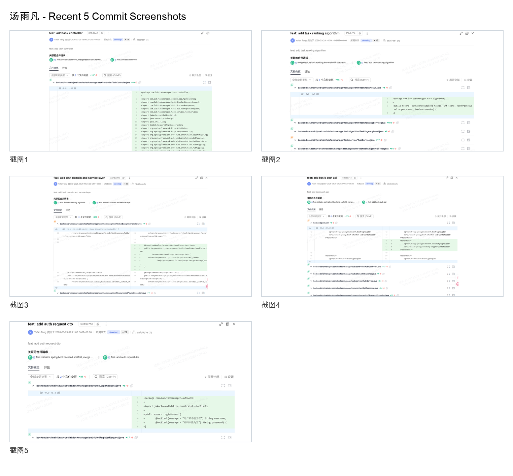
| 提交编号 | Commit SHA | Commit message | 提交内容 | AI 使用 |
|---|---|---|---|---|
| 提交1 | 92372346e72a |
feat: add pagination support in TaskRepository and TaskService |
在 TaskRepository 和 TaskService
中加入分页逻辑，使任务列表能够支持分页查询。 |
用于编写 JPA 分页逻辑。 |
| 提交2 | 84a084165c10 |
feat: implement pagination support in TaskController with PageRequest and PageResult classes |
在 TaskController
中补充分页请求与分页结果对象接入，完善分页接口的控制器层实现。 |
用于分页接口设计与代码整理。 |
| 提交3 | 259df04623ab |
feat: add pagination endpoint to TaskController |
为任务控制器新增分页接口入口，使前端能够按页获取任务列表。 | 用于接口补全与提交说明整理。 |
| 提交4 | 1dfcd264c885 |
fix: update JWT configuration structure in application.yaml |
调整 application.yaml 中 JWT
配置结构，使配置项与当前认证链路保持一致。 |
用于检查配置结构并辅助整理修复说明。 |
| 提交5 | d9515c01b6e7 |
fix: allow public access to Swagger UI and API documentation endpoints |
放开 Swagger / Knife4j 文档相关路径的访问权限，保证接口文档页面可以正常打开。 | 用于分析访问权限问题并辅助整理修复说明。 |
以下为沈乐最近 5 条提交截图汇总：
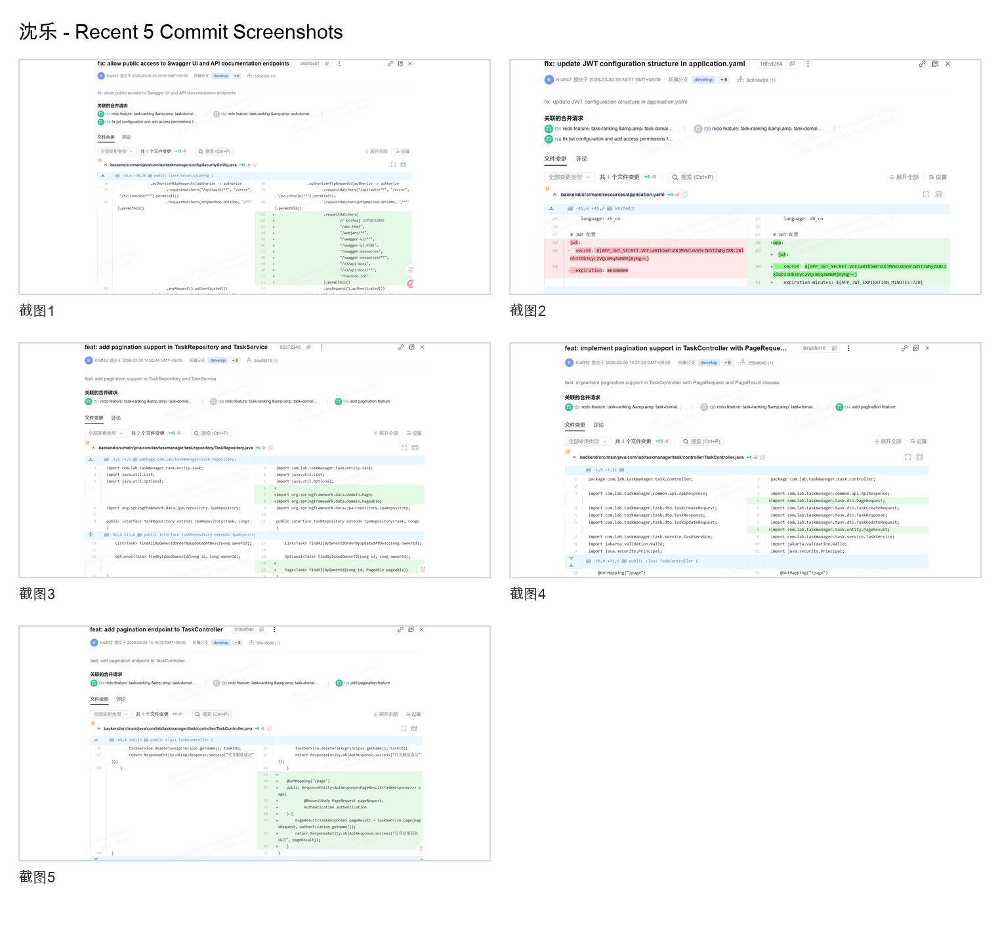
| 提交编号 | Commit SHA | Commit message | 提交内容 | AI 使用 |
|---|---|---|---|---|
| 提交1 | f7f4aa441f43 |
feat(auth): implement JWT authentication and security configuration |
新增
JwtService、JwtAuthenticationFilter、JwtProperties、CustomUserDetailsService
和 SecurityConfig，并更新认证返回结构与依赖配置。 |
用于构建部分代码，并辅助书写 commit 信息。 |
| 提交2 | 89244abab9fd |
use Spring-managed PasswordEncoder and suppress deprecation warnings |
用 Spring 管理的 PasswordEncoder
替换手动创建方式，并补充兼容性处理。 |
用于代码检查，并辅助书写 commit 信息。 |
| 提交3 | 0e5d1ee3cdda |
merge: resolve conflicts from origin/develop into feature/jwt-auth |
解决 feature/jwt-auth 与 develop
的冲突，统一 pom.xml 和配置文件结构。 |
用于辅助书写冲突处理说明和 commit 信息。 |
| 提交4 | 10f48bff09df |
feat: apply ranking sorting algorithm |
为任务列表加入 sortBy
参数和统一排序逻辑，支持智能排序、截止时间排序、创建时间排序、优先级排序、状态排序和更新时间排序。 |
用于部分代码实现，并辅助书写 commit 信息。 |
| 提交5 | 8fe265aa1f8b |
feat: add SortBy enum for type-safe task sorting |
新增 SortBy
枚举和字符串转换逻辑，统一控制器与服务层的排序类型表达。 |
用于辅助书写 commit 信息。 |
| 提交6 | f648a01f4ba6 |
perf: optimize task list with database pagination |
合并 /page 和 /filter 为统一的
GET /api/tasks
接口，将分页下推到数据库层，并补充接口迁移说明。 |
用于编写部分代码，并辅助书写 commit 信息。 |
以下为李泽栋最近 5 条提交截图汇总：
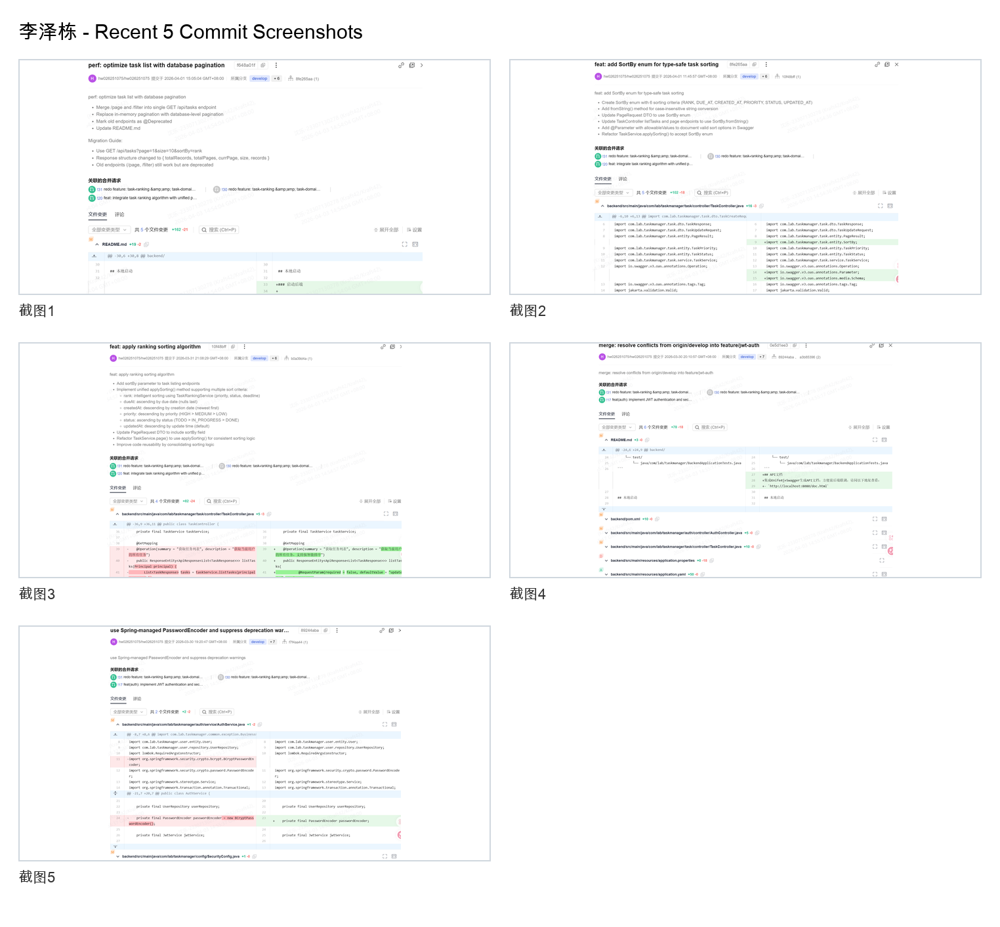
| 提交编号 | Commit SHA | Commit message | 提交内容 | AI 使用 |
|---|---|---|---|---|
| 提交1 | 4d1bd366b88e |
feat: init frontend with Vite + React + TypeScript |
初始化前端工程，建立 React + Vite + TypeScript 开发环境，并加入路由、Axios、ESLint 和环境配置。 | 用于辅助书写 commit 信息。 |
| 提交2 | cab759dc4e76 |
feat: add types and utils modules |
新增 API、认证、任务相关类型定义，以及日期格式化和本地存储工具函数。 | 用于整体框架构建，并辅助书写 commit 信息。 |
| 提交3 | c5ff0673d35d |
feat: add authentication context |
新增全局认证上下文与 useAuth
Hook，实现登录态管理和本地存储同步。 |
用于代码检查，并辅助书写 commit 信息。 |
| 提交4 | 9e13a1fec2f7 |
feat: add reusable UI components |
新增
AuthCard、ProtectedRoute、TaskForm、TaskList、TaskFilters、Toast
等复用组件。 |
用于部分组件代码实现、优化和 commit 说明整理。 |
| 提交5 | 228cfa7c2188 |
feat: add api, app and layout modules |
新增前端 API 层、路由层与页面布局，形成页面到接口的基本连接结构。 | 用于生成所需功能类型、提供实现思路，并辅助书写 commit 信息。 |
| 提交6 | 4b99965b723b |
feat: add page components |
新增登录页、注册页、任务主页和 404 页面，完成前端主要页面搭建。 | 用于主要功能页代码完善、页面文案生成和 commit 说明整理。 |
| 提交7 | 91d2cec9d1e7 |
feat: integrate app root and global styles |
完成应用根组件接入，并补充全局样式、布局样式和响应式设计。 | 用于 index.css 构建、代码完善检查和 commit
说明整理。 |
| 提交8 | 74ae3c3607bc |
feat: integrate pagination and backend filtering |
接入分页参数、分页 UI、后端筛选接口，并保留前端关键词搜索逻辑。 | 用于找出需要修改的代码位置、给出修改方案，并辅助书写 commit 信息。 |
以下为李宇轩最近 5 条提交截图汇总：
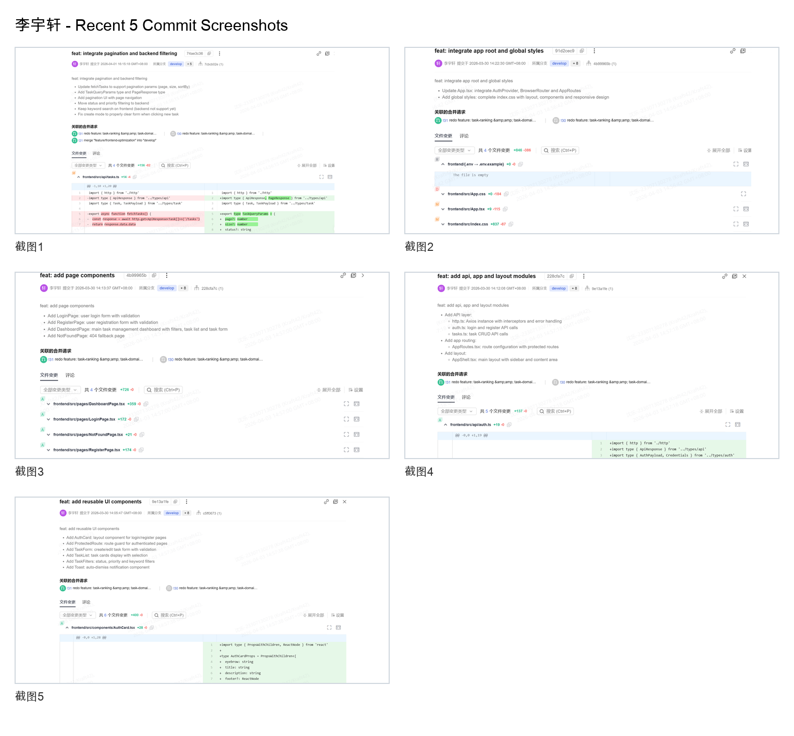
| 提交编号 | Commit SHA | Commit message | 提交内容 | AI 使用 |
|---|---|---|---|---|
| 提交1 | af17fec0fc20 |
更新 README.md |
更新项目 README，补充项目结构、接口文档和运行说明。 | 用于生成 Markdown 表格格式的 API 文档、编写项目结构说明，并检查技术栈描述。 |
| 提交2 | 26d97f3bf599 |
TaskServiceTest |
在任务服务相关位置补充业务逻辑实现与验证思路，围绕任务创建、查询、更新、删除等流程完善服务层。 | 用于主要功能代码完善、文本生成以及 commit 说明整理。 |
| 提交3 | 20426c8ca786 |
merge feature/readme into main |
将 feature/readme 分支合入 main，同步更新
README，并新增 run.sh 启动脚本，补充项目运行说明。 |
未单独记录，主要为分支合并操作与文档整理。 |
| 提交4 | d2825805cdaf |
merge feature/fronted-router into main |
将 feature/fronted-router 分支合入
main，加入前端 Axios
请求封装、路由入口以及早期任务列表页面。 |
未单独记录，主要为分支合并操作与前端结构接入。 |
| 提交5 | e89f3d8b0c6b |
merge feature/frontend-develop into main |
将 feature/frontend-develop 分支合入
main，补入早期前端基础工程文件以及对应控制器入口。 |
未单独记录，主要为分支合并操作与前端基础结构整理。 |
需要说明的是，彭国渠最近 5 条提交中后 3 条属于项目早期直接进入
main 的合并历史；这部分在后续已经通过
hotfix/revert-main-direct-merges
完成清理和主干对齐，因此在最终代码状态中已被修正。
以下为彭国渠最近 5 条提交截图汇总：
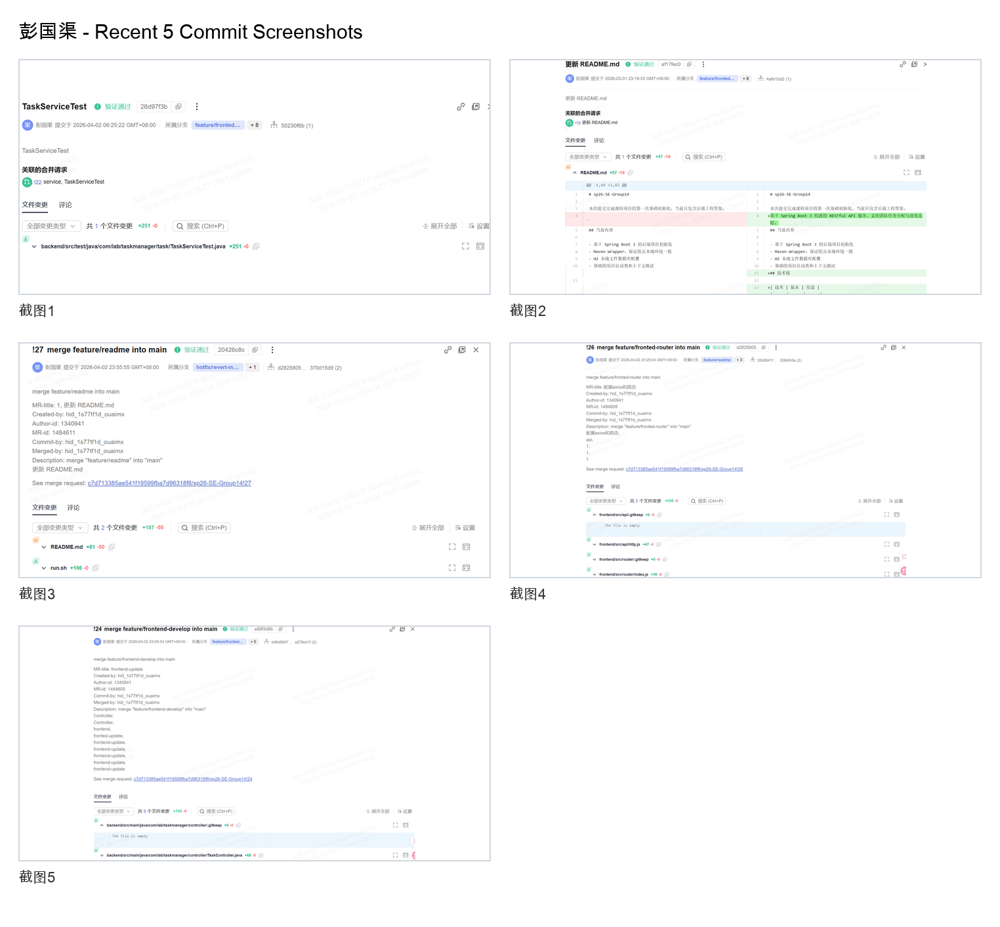
我们做了一个按分值组织的自评表，仅供参考。
| 得分点 | 当前情况 | 证据 |
|---|---|---|
| 用户注册功能正确实现 | 已实现 | 注册接口、用户名唯一性校验、密码规则校验、注册截图 |
| 用户登录功能正确实现 | 已实现 | 登录接口、JWT 登录态、错误密码提示截图 |
| 个人任务 CRUD 正确实现 | 已实现 | 任务列表页、创建/编辑/删除截图、TaskController/TaskService |
| 不同用户任务隔离 | 已实现 | 集成测试验证不同用户不能访问他人任务 |
| 前端页面逻辑清晰、交互顺畅 | 已实现 | 登录/注册/任务页完整链路截图 |
| 错误提示合理 | 已实现 | 注册校验、登录失败、失效 Token、空筛选提示 |
| 得分点 | 当前情况 | 证据 |
|---|---|---|
| 前后端分离架构 | 已实现 | backend/ 与 frontend/ 独立结构 |
| 数据库设计合理 | 已实现 | users / tasks
实体设计、字段约束、关联关系 |
| 异常处理合理 | 已实现 | 全局异常处理、统一响应结构 |
| 代码结构清晰、便于扩展 | 已实现 | 模块化分包、前端组件化拆分 |
| 得分点 | 当前情况 | 证据 |
|---|---|---|
| 每位成员都有提交记录 | 已满足 | Git 作者统计 + 每人最近 5 条 commit 截图 |
| Commit Message 规范 | 已满足 | feat: / fix: / merge:
等规范提交信息 |
| 分支开发流程规范，至少一次 MR | 已满足 | 多个 feature/* -> develop，至少一个
hotfix/* -> main |
| 得分点 | 当前情况 | 证据 |
|---|---|---|
| AI 使用记录真实清晰 | 已满足 | 本报告第 8 节 |
| 能解释关键设计决策 | 已满足 | 本报告第 5 节 |